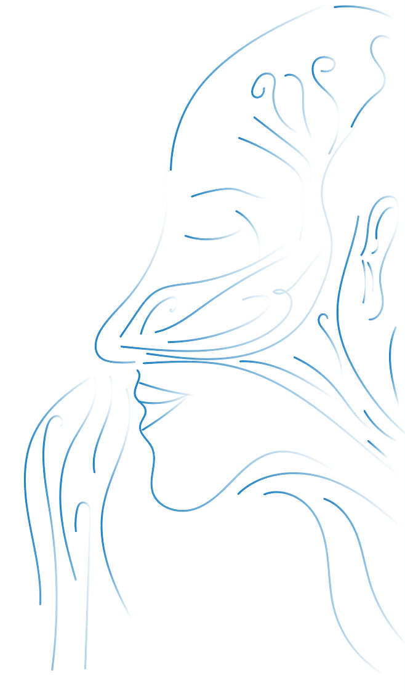

seed techniques are nothing new, they have rather been hidden in plain sight. now we need to bring them to light. it is a time to upgrade our mind by understanding our body.
1
Electromagnetic Fields
Every living organism has an electric field of electromagnetic waves surrounding them. This is how information is shared. We feel emotions through this electromagnetic field, we experience life through this field. Two individuals that are resonating around a certain frequency will attract each other, creating a unique outcome of a bigger individual that is aligned to the frequency of the smaller individuals.
You may have heard of the universal law of attraction.
This can be said for molecules, elements, compounds, cells, tissues, organs, bodies, planets, and all other interconnected systems. This field interacts with our environment, which influence our thoughts, which then influence our emotions - emotions being the chemical feedback of our external experience.
And this cycle of interconnectedness with our environment and our emotions is what we are constantly living in. Our lives are often the result of this loop, of action and reaction. If we are consistently reminding ourselves of negative experiences, having bad thoughts about ourselves, having bad thoughts about everyone around us - then we are shaping our future by replaying the same negative emotions that are the output of those negative thoughts and experiences.
How do we stop this cycle of environment and emotions?
How do we stop thinking about the past and letting it dictate our present and future lives?
How do we transform ourselves into a life of novel emotions?
The answers although very simple, may not be that tangible to a person who is in a negative state. Those in negative states produce unequal and incoherent patterns of neurons in the brain, making ideas and common sense become fuzzy, confusing, and not worth figuring out. Creating happiness and positive states of mind out of negative states is the first initiative to reprogramming our lives out of the past and into the present moment.
2
Brain Waves
Our brain is an electromagnetic organ, meaning that it contains voltage when supplied with energy and a frequency that is responsible for the distinct movement of energy measuring the amount of energy swings (oscillations) or hertz, per second. Every frequency has different characteristics, and there are five intervals of distinctions for frequencies of the brain at work.
These are:
Delta at 0.1 Hz to 4 Hz - unconscious, deep relaxation and restoration of the body
Theta at 4 Hz to 8 Hz - meditative, relaxed, limbic brain stimulation, subconscious recall and understanding, flow state
Alpha at 8 Hz to 13 Hz - creative, Neocortex deactivated, visualization, flow state
Beta at 13 Hz to 30 Hz - survival brain, neocortex activated, rationale, awake, conscious of external environment
Gamma at 30 Hz to 140 Hz - expansion of consciousness, heightened senses, nonlocal memory recall, experiencing reality based on internal processes, brain stem activation
Now how do we step into these higher frequencies, how do we get the results of a focused, peaceful, imaginative, and nonjudgmental human mind? If frequency is truly just energy, and energy in motion is emotion, then the answer is to elevate our emotions consciously.
incoherent
coherent
3
Elevated Emotions
When a thought is produced within the mind, this thought then produces a chemical reaction which in turn is equivalent to a certain emotion. For example: thinking of those we love produces the chemical connected with love which is oxytocin which can trigger the emotions of gratitude, appreciation, joy, and love. We can think of emotions as chemical feedback.
When an emotion is produced from a reaction of external environment, this emotion then produces its corresponding chemicals which are transported to the DNA inside of a cell. The genes of our DNA make a protein that is equal to the signal of the chemical. There are specific proteins for specific parts of the body, they are a vital part of the immune system, digestion, cellular repair, and bone and muscle structure. In a very real way, the expression of proteins is equal to the health of the body.
If we are continuously experiencing the same emotions from our past experiences, our genes end up creating proteins that are down-regulating in their expressions, becoming less effective and creating weaker qualities of specific proteins, we are then not functioning at our optimal potential.
If we are continuously experiencing novel emotions through our imagination and meditation, our genes will continue to up-regulate in their expressions, becoming more healthy and creating healthier qualities of specific proteins. To create elevated, positive emotions we must create a medium for which those emotions can arise, this can be from a past positive experience, being present in this moment, or imagining a desired experience in the future. This is possible because the body cannot differentiate an experience happening in our outer environment and our inner imagination, it all comes down to our emotions, how we feel.
Our emotions are a true guiding force for our overall health, and this is no longer conspiracy, this is researched and proven fact. If individuals are consistently functioning in negative or unconscious emotional states, they are not only hurting themselves mentally by consistently creating a loop of intrusive thoughts and emotions, but over time physical damage will take place as well.
These techniques surround the idea of elevating our emotions consciously. Creating emotions of gratitude, appreciation, joy, and love. When these emotions are practiced with consistency, our bodies and our minds become habit to functioning in a coherent and balanced stage of well being improving all aspects of our lives whether that be on a personal level, with family, or in the collective of humanity.
4
Rhythmic Breathing
Breath is an essential factor in supplying health, longevity, and emotional stability in an organism. Without breath there is no life, so why is there little to no influence on how we should be conscious of our own breath?
Mouth breathing is a habit for many individuals of the 21st Century. We have stained a habit into our mind and bodies to let our jaw hang when we are physically exhausted, in deep sleep, or eating. Mouth breathing is actually inorganic towards the body, and it is a leading toxic towards health and longevity. When we breathe through our mouth we do not filter the air properly as our nose would through its tiny hairs, mucus build up, and tubes that connect to stomach acid that eliminate toxic particles and molecules from the air we inhale. On top of an unfiltered inhale, we are inhaling too much air into our lungs, mainly because there is a specified canal behind our nose about the size of a billiard ball that lets about 5-6 liters of air in through our nose to our throat than the mouth which allows 15 liters. There is also much scientific evidence pointing towards the effects nasal breathing has on facial morphology over mouth breathing. Looking at a picture of someone who breathes in through their nose habitually versus someone who breathes through their mouth habitually has a healthier structure of their face. Intuitively it all can be said that breathing through the nose is the correct way breathing, breathing calms us in stressful situations, and breathing correctly will outcome in a life of health, it is the way of nature’s design.
Breathing through the nose, slow and deep, allows are body to restore itself, allows our minds to let go of external issues and focus on what truly matters - our happiness and health. Breathing through the nose with attention to the flow of breath, slow and deep, with an inner smile, with an intention, with an elevated emotion will be jetfuel to the breath and its benefits towards the body, mind, and soul.
There are many breathing techniques and mechanisms on the market, that have come from eastern philosophy and are slowly making a translation into western science and medicine. SEED provides simple, mechanical, and scientifically reviewed breathwork techniques that can be smoothly implemented into those with no past experience with working with the breath. Below are the following:
Triangle Breath:
Inhale for 5.5 seconds
Exhale for 5.5 seconds
Pause for 5.5 seconds

A simple technique to balance the breath, exercise equilibrium with inhale and exhale, and introduce elevated emotions and visualization
Many individuals may have acute struggle with the timing, most individuals do not exhale fully, so exercising this practice will reestablish the exhale.
The reason for 5.5 seconds is that this is the universally accepted interval for breath providing the maximum mind and body health effects. The rule of 5.5 is symmetrical in its principle that is when inhaling 5.5 seconds and then exhaling 5.5 seconds, we are taking in 5.5 breaths per minute for a total of 5.5 liters of air.
The triangle breath is the beginning breath to exercise and with time should become the standard breath for an individual.
Lock, Breathe, Squeeze:
Locking the Pelvic Floor, lower abdomen, upper abdomen (3 lowest energy centers)
Breath rising from pelvc floor through heart cavity towards and out of the top of the head (7 energy centers)
Squeezing the body to create presssure for spinal fluid to rise into the pineal gland of the brain
The purpose of this technique is to learn how to be in tune with certain muscles of the body to provide mechanical stress support for spinal fluid to reach into the brain next to the pineal gland.
This exercise causes acute mechanical stress to the body and mind, releasing energy from the root energy center towards the top of the head into the pineal gland that holds calcite crystal that will become electrically activated, playing the role as a receiver and transducer of information. The information it will receive and transduct is from frequency, not only visible light, but all frequency wavelengths that our eyes cannot see, like a TV signaling certain channels and turning them into images on the black screen.
This technique should be introduced in segments, first starting with practice of flexing certain muscles, then flexing muscles together, then flexing muscles and breathing up into the heart towards the top of the head.
Breathing rhythmically and creating a programmed habit of these breath intervals so that they can be performed unconsciously can transform a students cardiovascular system, immune system, nervous system, ability to stay focused, ability to be emotionally in control, and overall experience new joys and bliss which create the loop of action and reaction, of environment and emotion, but rather a negative state, the body is slowly becoming acquainted to seek a positive state. All these benefits come to life because students are capable to reach slower wavelengths of frequency in the brain (alpha and theta). With practice students will become more comfortable with the stress levels from Lock, Breath, and Squeeze, and with this ability to sustain that stress, brain waves will increase going through the 3 subsets of beta brainwaves then towards gamma brain waves, which provide heightened senses, insight, clarity, and profound mystical experience.
5
Energy Centers
With these emotions in place, there is also the implementation of putting attention to different aspects of the body. The human body has 7 energy centers that are correlated with a specific gland, unique hormones, and an individual plexus of neurons (brain cells). These individual clusters of neurons are equivalent to mini brains, meaning each of the seven areas has its own mind when these mini brains are firing their neurons. When we place our attention (which can also be termed as our energy) on a specific energy center in the body, we are triggering specific information about our lives that have been stored in dormancy.
1st Energy Center
Glands: sexual (perineum, pelvic floor, prostate, bladder, lower bowel, anus)
Function: reproduction, creativity, elimination, sexuality, sexual identity
A simple example is using the first energy center. When we have a fantasy about food, we are having thoughts related to satisfying our hunger. Those thoughts fire a specific network of neurons, which create a specific internal representation or pattern in the frontal lobe of the brain. When are attention is directed towards the image or scene we have in our brain, that becomes our experience, no longer the outer world. As a result, the energy center triggers its neurons to create a certain level of mind, this signals the glands surrounding that energy center to produce specific hormones and chemicals equal to those thoughts. In the end result, our body reacts, creating this loop of environment and emotion.
It is very common that individuals of growing adolescents have an unbalanced alignment of such energy centers, which can be seen obvious when observing one’s behavior and personality given the functions of each center. Having young children balance and align their energy centers at a young age and providing the tools and techniques to continue such alignment is beneficial and almost crucial to living a healthy, motivated, successful, explorative, and expansive life. The possibilities of an individual’s creativity at work is infinite and when creativity is also aligned with moderation, discipline, love, and truth, we are in for a ride for the expansion of human thought into reality.
6
Visualization
Visualization is being able to visualize what we want to happen in our lives, and feel the experience as if it already happened. For decades individual’s centered in life coaching, athletes, superstars, and successful people all put emphasis on visualizing desire. For students to visualize about anything they desire will open them up to the benefits of living in experiences they don’t physically have yet. For those who feel trapped in their reality, and have issues that need resolving, visualizing the solution will, with patience and passion, free these individuals from their mind and body’s limitation.
Visualization primes us to elevate our emotions. Like noted before, when we elevate our emotions we change our physiology by producing chemicals that are equivalent to the frequency of those emotions. We then enter a cycle, where our elevated emotions make us feel good, allowing for thoughts of positivity and growth to appear, which in turn creates more elevated emotions. Through such an intimate process, an indivdual has created the feelings of their desire as if they have already happened. Now we are inspired, motivated, chemically and energetically powered to strive for that desire in our real world - because we have already determined what the outcome is and fear is no longer an obstacle.
To be able to visualize and imagine and feel experience that has not already happened in the physical material world is the cornerstone of the success of SEED. In evolutionary terms, we can see that the body has been fully formed, then it was the brain that found its final shape, now next in line is the mind and imagination. Combining elevated emotions, breathwork, feeling the energy centers in the body, and visualizing our aspirations is like launching a rocketship to embark among the stars. Practice is necessary to find one’s sweet spot and be comfortable in it without fear or anxiety, and when that happens the individual is opened to novel experience of emotion and feeling, and this is exponential.
As indivudals we must visualize who we know we are capable of.
As a humanity we must visualize what we wish to be capable of.
And feel it.
If we harness the technology of our minds and bodies, we can truly use them as the catalysts for the sustainability of our Earth, the innovation of art and science, the exploration through the cosmos, and above all the freedom to experience.
With our mission, we are looking to expand this vessel throughout the world. Having children, adults, and elders celebrate their inner being, find their inner calling, and live with fulfillment and clarity. If anyone can experience the wonders of these techniques, anyone can teach them, and the world could use more teachers.
Are you interested in guiding collective meditations?
Want to attend and participate in collective meditations?